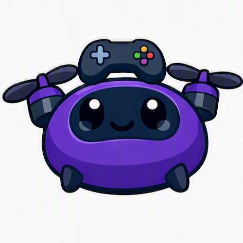

제가 만든 게임들을 소개할게요
게임
- 상황
- C를 배운 게 게임을 만들고 싶어서였다. 레이싱 게임을 시작으로, 수업 지도를 받으며 2DCombat을, 그 뒤엔 좋아하던 게임의 감각을 살려 레이캐스팅 FPS OVER_SHOT을 만들었다
- 행동
- 3개를 순서대로 만들며 배운 걸 다음 프로젝트에 쌓아갔고, 지금은 Java로 방향을 옮겨 기초를 다지는 중이다
- 결과
- 세 저장소 모두 공개돼 있고 각각 클론해서 실행해볼 수 있다
- 소스